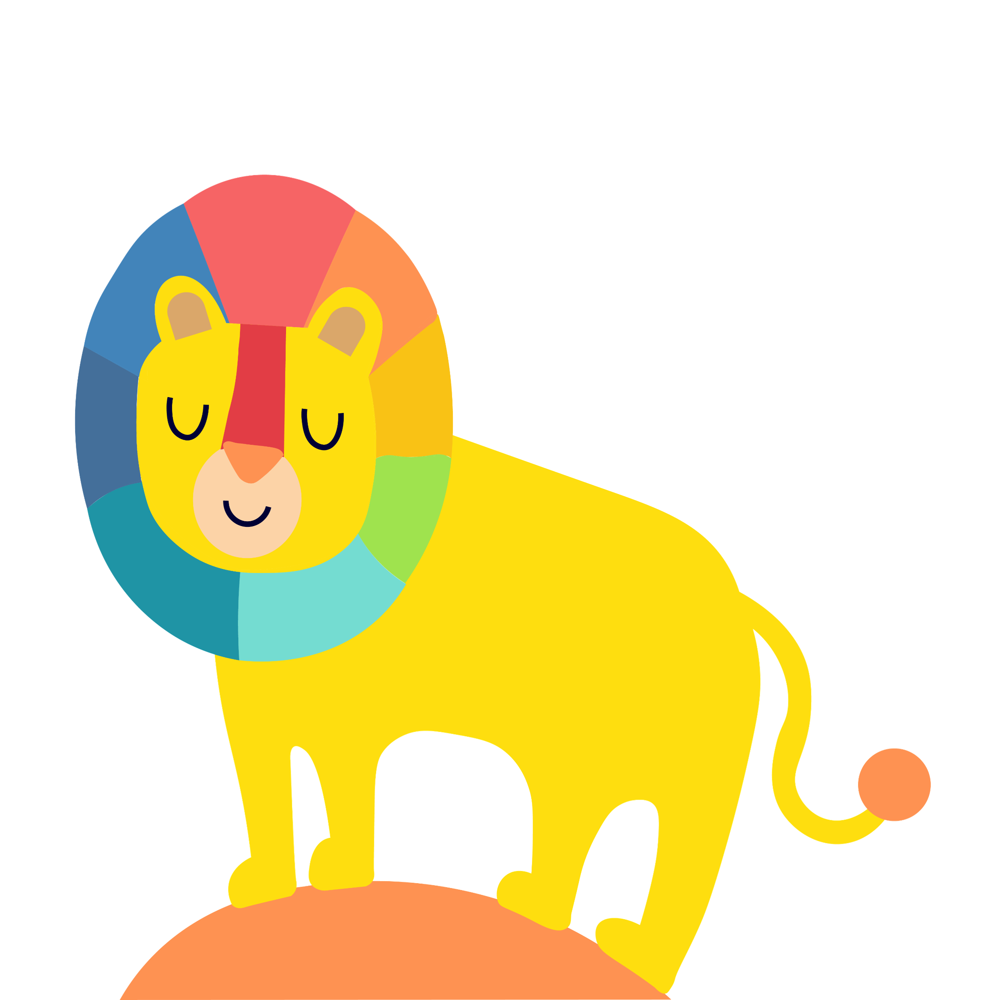
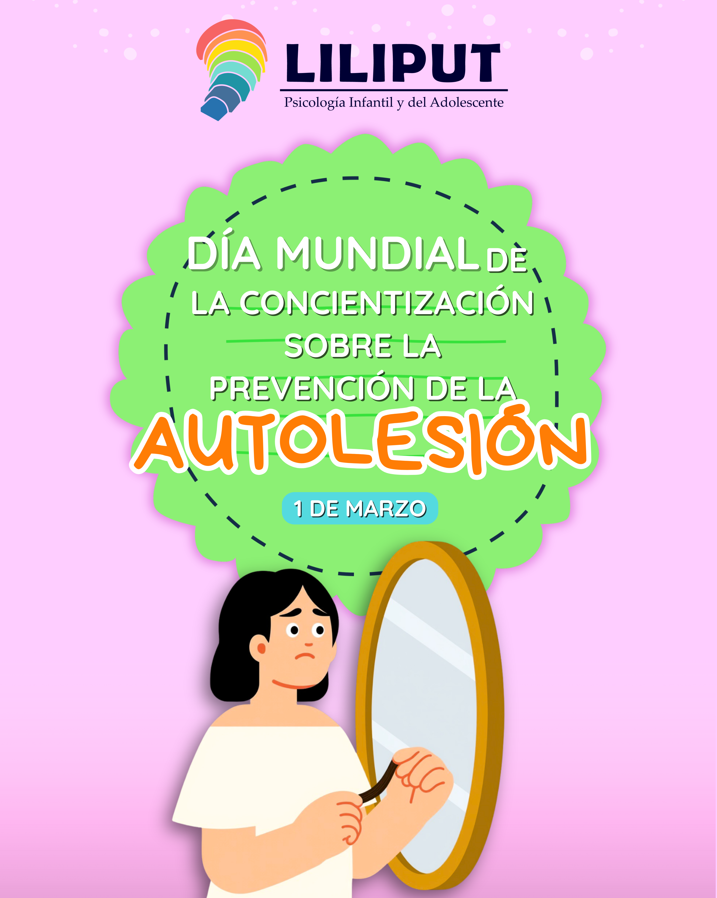

A VECES LO MÁS VALIENTE QUE PUEDES HACER ES PEDIR AYUDA
ACOMPAÑAMIENTO PSICOLÓGICO PROFESIONAL CON UN ENFOQUE CÁLIDO, HUMANO Y BASADO EN LA EVIDENCIA.

ÁREAS DE ACOMPAÑAMIENTO
TOLERANCIA A LA FRUSTRACIÓN
Acompañamos a sus hijos en el aprendizaje para manejar la frustración de manera saludable, fortaleciendo la paciencia y la resiliencia ante situaciones que no salen como esperan.
CONTROL DE IMPULSOS
Brindamos herramientas para que sus hijos aprendan a pensar antes de actuar, manejar la impulsividad y tomar decisiones más conscientes en su vida diaria.
ATENCIÓN, CONCENTRACIÓN Y MEMORIA
Fortalecemos las capacidades cognitivas de sus hijos mediante ejercicios prácticos que mejoran el enfoque, la retención de información y su rendimiento académico.
CONTROL DE IRA
Ayudamos a sus hijos a identificar los detonantes del enojo y a desarrollar estrategias efectivas para expresar sus emociones de manera adecuada y constructiva.
SOCIALIZACIÓN
Impulsamos el desarrollo de habilidades sociales en sus hijos, favoreciendo relaciones saludables, la creación de amistades y una mejor integración en su entorno.
AUTOESTIMA
Trabajamos en el fortalecimiento del autoconcepto y la valoración personal de sus hijos, promoviendo una relación más segura y positiva consigo mismos.
ORIENTACIÓN VOCACIONAL
Acompañamos a sus hijos en el descubrimiento de sus habilidades, intereses y fortalezas para que puedan tomar decisiones académicas y profesionales con mayor seguridad y claridad.
ANSIEDAD
Brindamos estrategias prácticas para que sus hijos aprendan a gestionar la ansiedad, reducir preocupaciones excesivas y recuperar la calma en su día a día.
ESTRÉS
Apoyamos a sus hijos en la identificación de las fuentes de estrés y en el desarrollo de técnicas efectivas para manejarlo, promoviendo equilibrio y bienestar.
¿Cuándo llevar a mi hijo/a al psicólogo/a?
Cambios en intereses y rutina
- Sus gustos han cambiado radicalmente.
- Se ha desmotivado por actividades que antes le agradaban mucho.
- Ha experimentado alguna situación drástica (pérdida, cambio de vivienda, divorcio, etc.).
Rendimiento y atención escolar
- Bajo rendimiento escolar.
- Falta de atención / concentración.
- Hiperactividad o dificultades específicas del aprendizaje (lectura, escritura, cálculos, memoria, percepción).
Relaciones sociales
- Retraimiento o aislamiento social.
- Ejercer o sufrir acoso escolar.
- Dificultad para expresarse o aislarse de los padres.
Problemas de conducta y emocionales
- No respeta límites con padres, profesores u otras autoridades.
- Muestra impulsividad, agresividad o intolerancia a la frustración.
- Ansiedad, depresión o estrés.
Desarrollo y salud
- Trastornos del sueño o problemas en el control de esfínteres.
- Consumo de sustancias psicoactivas o riesgo de embarazo precoz.
- Señales de trastornos alimentarios (anorexia / bulimia).
Problemas cognitivos y autoestima
- Poca capacidad de autovaloración o desconfianza en sí mismo.
- Incapacidad para tomar decisiones y procrastinación.
LIC. Edson Gutiérrez Pellegrin
Licenciado en Psicopedagogía con enfoque Cognitivo-Conductual.
Especialista en acompañamiento infantil y adolescente.
Lic. Ana Terán Cruz
Licenciada en Psicopedagogía con enfoque Cognitivo-Conductual.
Especialista en niños y adolescentes
Verdades y Mitos sobre la Psicología
❌ MITO
Ir al psicólogo es solo para personas con problemas graves.
✅ VERDAD
La terapia ayuda a cualquier persona que quiera mejorar su bienestar emocional.
❌ MITO
Los niños no necesitan terapia porque “ya se les pasará”.
✅ VERDAD
La atención temprana en la infancia fortalece el desarrollo emocional.
📅 PRÓXIMOS EVENTOS

Primeros auxilios psicológicos
Charlas en el colegio Madre Rafaela de la pasión Importancia del TOE .
⏰ 8 am - 10:00 am
📍 LILIPUT
💬 OPINIONES DE NUESTROS PACIENTES
Lo que dicen las familias sobre LILIPUT
"Mi hija peleaba constantemente con su hermanita, aquí en Liliput aprendió a regular sus emociones. Ahora comparte y cuando se frustra por algo, lo maneja de mejor forma que antes. Estamos muy agradecidos con el Lic. Edson."
María Fernández
Madre de familia
"Mi hijo tenía problemas para hacer amigos y se aislaba mucho. Desde que asiste a terapia con la Lic. Ana, ha mejorado su autoestima y ahora participa en actividades con otros niños. Verlo feliz no tiene precio."
Carlos Rodríguez
Padre de familia
"Mi adolescente estaba pasando por una etapa de mucha ansiedad por los exámenes. En LILIPUT le enseñaron técnicas de relajación y manejo del estrés. Ahora enfrenta sus estudios con más calma y seguridad. Muy recomendados."
Patricia Mendoza
Madre de familia
"Mi hijo de 6 años tenía problemas para concentrarse en el colegio. La terapia con el Lic. Edson ha sido maravillosa, ahora presta más atención y sus notas han mejorado. Las sesiones son lúdicas y él va contento."
Lucía Gómez
Madre de familia
PREGUNTAS FRECUENTES
Resolvemos tus dudas más comunes
Algunas señales pueden ser: cambios bruscos en el comportamiento, dificultad para dormir, bajo rendimiento escolar sin causa aparente, irritabilidad constante, aislamiento o regresiones (volver a hacerse pipí, etc.). Si notas estas señales por más de 2-3 semanas, una consulta con un especialista puede ayudar a entender mejor la situación.
Las sesiones tienen una duración aproximada de 45 a 50 minutos. La frecuencia recomendada es generalmente semanal, especialmente al inicio del proceso, para poder establecer un vínculo terapéutico sólido y dar continuidad al trabajo emocional.
Actualmente trabajamos de manera particular. Aceptamos pago en efectivo, transferencia bancaria y Yape/Plin. Consulta por nuestras tarifas promocionales para pacientes frecuentes o paquetes de sesiones.
¡Sí! Ofrecemos sesiones tanto presenciales en nuestra oficina en Piura, como online a través de videollamada para quienes viven fuera de la ciudad o prefieren la comodidad de su hogar. Ambas modalidades tienen la misma calidad profesional.
Puedes agendar de tres formas:
1) Llenando nuestro formulario de contacto (botón "AGENDAR CITA"),
2) Escribiéndonos directamente al WhatsApp 996110346, o
3) Enviándonos un mensaje por Instagram o Facebook o Tiktok Te responderemos a la brevedad posible para coordinar el día y hora de de tu cita.
Brindamos atención psicológica a:
👶 Niños desde los 3 años.
👦 Niños en etapa escolar.
🧑 Adolescentes.
👨👩👧 Padres que requieran orientación y acompañamiento.
Adaptamos las estrategias terapéuticas según la edad y las necesidades individuales de cada paciente, trabajando siempre de la mano con la familia cuando es necesario.
Sí, realizamos:
📑 Informes psicológicos para instituciones educativas.
📝 Certificados psicológicos según evaluación previa.
📊 Reportes de avance terapéutico cuando sean solicitados.
Todos los documentos se emiten de manera formal y profesional, luego de un proceso de evaluación responsable.
AGENDAR CITA
Déjanos tus datos y te contactaremos
TOLERANCIA A LA FRUSTRACIÓN
¿Qué es?
Aprender a manejar la frustración es fundamental para el desarrollo emocional de tus hijos. Les enseñamos a aceptar que no siempre se puede ganar y que los errores son oportunidades para crecer.
Beneficios:
- Desarrollan paciencia y perseverancia
- Aprenden a manejar la decepción
- Mejoran su autoestima al superar retos
- Reducen berrinches y pataletas
CONTROL DE IMPULSOS
¿Qué es?
Enseñamos a tus hijos a pensar antes de actuar, a reconocer sus impulsos y a tomar decisiones más conscientes en su día a día.
Beneficios:
- Mejora la toma de decisiones
- Reduce comportamientos riesgosos
- Fomenta la autorregulación emocional
- Fortalece la atención y concentración
ATENCIÓN, CONCENTRACIÓN Y MEMORIA
¿Qué es?
Fortalecemos las capacidades cognitivas de tus hijos mediante ejercicios prácticos y divertidos que mejoran su rendimiento académico.
Beneficios:
- Mejora el rendimiento escolar
- Aumenta la capacidad de retener información
- Desarrolla la capacidad de enfoque
- Facilita el aprendizaje
CONTROL DE IRA
¿Qué es?
Ayudamos a tus hijos a identificar qué desencadena su enojo y a expresar sus emociones de manera saludable y constructiva.
Beneficios:
- Reduce explosiones de ira
- Mejora la comunicación familiar
- Enseña técnicas de relajación
- Fomenta relaciones más armoniosas
AUTOESTIMA
¿Qué es?
Trabajamos en fortalecer la valoración personal de tus hijos, ayudándoles a construir una imagen positiva y segura de sí mismos.
Beneficios:
- Aumenta la confianza en sí mismos
- Mejora la resiliencia
- Reduce la inseguridad
- Fomenta una actitud positiva
ORIENTACIÓN VOCACIONAL
¿Qué es?
Acompañamos a tus hijos a descubrir sus verdaderas pasiones, habilidades y talentos para que elijan su futuro con seguridad.
Beneficios:
- Claridad en su futuro académico
- Descubren sus talentos ocultos
- Reducen la ansiedad por decidir
- Toman decisiones con seguridad
ANSIEDAD
¿Qué es?
Brindamos herramientas prácticas para que tus hijos aprendan a gestionar la ansiedad y recuperar la calma en su vida diaria.
Beneficios:
- Reducen preocupaciones excesivas
- Aprenden técnicas de respiración
- Mejoran la calidad del sueño
- Recuperan la tranquilidad
ESTRÉS
¿Qué es?
Apoyamos a tus hijos a identificar las causas de su estrés y a desarrollar técnicas efectivas para manejarlo y encontrar equilibrio.
Beneficios:
- Identifican fuentes de estrés
- Aprenden a relajarse
- Mejoran su rendimiento
- Recuperan el bienestar emocional
Cambios en intereses y rutina
¿Por qué es importante?
Los cambios repentinos en los intereses y rutinas de tu hijo pueden ser señales de que algo no está bien emocionalmente. Los niños expresan su malestar a través de cambios en su comportamiento cotidiano.
Señales de alerta:
- Gustos: Abandona repentinamente actividades que antes amaba
- Motivación: Muestra desinterés generalizado, incluso en cosas que le emocionaban
- Rutina: Cambios en hábitos de sueño, alimentación o juego
- Eventos: Reacciona de manera intensa a cambios familiares (divorcio, mudanza, pérdida)
¿Qué puedes hacer?
Observa sin juzgar, mantén una comunicación abierta y busca ayuda profesional si los cambios persisten más de 2-3 semanas. Un psicólogo puede ayudar a identificar la causa subyacente.
Rendimiento y atención escolar
¿Por qué es importante?
El bajo rendimiento escolar no siempre es falta de estudio. Puede esconder problemas de atención, dificultades de aprendizaje o conflictos emocionales que afectan su capacidad de concentración.
Señales de alerta:
- Notas: Bajón repentino en calificaciones sin causa aparente
- Atención: Se distrae fácilmente, no termina tareas
- Aprendizaje: Dificultades específicas en lectura, escritura o matemáticas
- Hiperactividad: No puede estar quieto, interrumpe constantemente
¿Qué puedes hacer?
Habla con sus profesores, observa sus hábitos de estudio y considera una evaluación psicopedagógica para descartar problemas como dislexia, TDAH u otras dificultades.
Problemas de conducta y emocionales
¿Por qué es importante?
Los problemas de conducta suelen ser la forma en que los niños expresan su malestar emocional. La impulsividad, agresividad o desobediencia pueden tener causas profundas.
Señales de alerta:
- Límites: Desafía constantemente a padres y autoridades
- Impulsividad: Actúa sin pensar, tiene dificultad para esperar
- Agresividad: Golpea, insulta o destruye cosas cuando se enoja
- Frustración: No tolera que las cosas no salgan como quiere
- Emociones: Muestra ansiedad, tristeza o irritabilidad constante
¿Qué puedes hacer?
Establece límites claros y consistentes, valida sus emociones y busca ayuda profesional si la conducta interfiere con su vida diaria o la dinámica familiar.
Desarrollo y salud
¿Por qué es importante?
Los problemas de salud física y del desarrollo pueden tener un componente emocional importante. Así mismo, los problemas emocionales pueden manifestarse en síntomas físicos.
Señales de alerta:
- Sueño: Pesadillas constantes, dificultad para dormir o exceso de sueño
- Control: Se hace pipí o popó encima después de haber aprendido a controlar
- Sustancias: Consumo de alcohol, tabaco u otras drogas en adolescentes
- Alimentación: Señales de trastornos alimentarios (come muy poco, come en exceso, se provoca vómitos)
- Riesgos: Conductas sexuales de riesgo en adolescentes
¿Qué puedes hacer?
Consulta primero con un pediatra para descartar causas físicas. Si todo está bien, un psicólogo puede ayudar a abordar los aspectos emocionales subyacentes.
Problemas cognitivos y autoestima
¿Por qué es importante?
La forma en que tu hijo se ve a sí mismo afecta todas las áreas de su vida. Una baja autoestima puede limitar su potencial y hacerlo más vulnerable a problemas emocionales.
Señales de alerta:
- Autovaloración: Se menosprecia constantemente, dice "no sirvo para nada"
- Confianza: Desconfía de sus propias capacidades, incluso en cosas que sabe hacer
- Decisiones: Le cuesta muchísimo tomar decisiones simples
- Procrastinación: Deja todo para después por miedo a no hacerlo bien
- Perfeccionismo: Se exige demasiado y se frustra si no es perfecto
¿Qué puedes hacer?
Reconoce sus esfuerzos más que sus resultados, evita comparaciones y busca ayuda profesional si notas que su baja autoestima le impide disfrutar de la vida o enfrentar desafíos.